Latha's model gave a coefficient of 4.7. Was that right? She had no way to tell — nobody knows the true coefficient of real house prices.
So she could not separate "my code is wrong" from "the data is just like that".
Learning needs a case where the answer is known in advance.
make_regression builds data from a coefficient you choose. Fit a model, and if it recovers your number, your code is right. The make_* family also builds blobs, circles and moons — shapes designed to break specific algorithms so you can see them fail.
🔑 The one idea
When you generate the data, you know the truth — so you can check whether the model found it.
Status: 🟡 Learning. This notebook generates data. No model is trained yet.
What is a synthetic dataset?
A synthetic dataset is data that scikit-learn invents for you.
You describe the shape you want — how many rows, how many columns, how much
noise — and the library builds a table that matches. Nothing is downloaded.
Nothing is read from disk. The numbers come from a formula plus a random
number generator.
Why do we need it?
You are learning algorithms, not data cleaning. A real CSV fights back: missing
values, text columns, wrong types, an unclear target. All of that hides the one
question you are actually asking — does this algorithm work, and when does it
fail?
Reason
What it buys you
You already know the answer
You chose the slope, the number of clusters, the noise. So you can check whether the model found it.
You control the difficulty
Turn one knob and the problem gets harder. That is how you learn what breaks a model.
It is reproducible
random_state=0 gives every reader the same rows, forever.
It is instant
No download, no licence, no privacy review, no NDA.
Engineering view. This is a test fixture generator. It is the same idea
as a TestDataBuilder or a Faker factory in a Spring Boot test suite. You are
not testing the data. You are testing the code that consumes the data — and a
fixture you built yourself is the only one whose expected result you know.
The family
Every generator returns the same two things: X (the inputs) and y (the
answer). Only the shape of the answer changes.
Generator
y is
The picture it makes
Built to test
make_regression
a number
a noisy straight line
linear regression, MSE, R²
make_classification
a label
blobs at the corners of a cube
logistic regression, trees, feature selection
make_blobs
a cluster id
round, separated groups
KMeans, DBSCAN
make_circles
a label
a ring inside a ring
anything non-linear
make_moons
a label
two interlocking crescents
anything non-linear
what kind of answer do I want?
│
┌──────────────────────┼──────────────────────┐
│ │ │
a number a category no answer at all
│ │ │
make_regression make_classification make_blobs
│ (y is just a group id)
is a straight line
allowed to work?
│ │
yes no
│ │
make_classification make_circles / make_moons
Read the notebook in that order. Each section shows the call, every parameter,
and one chart of what the parameter actually changes.
codecell 1
import numpy as np
import matplotlib.pyplot as plt
from sklearn.datasets import (make_regression, make_classification,
make_blobs, make_circles, make_moons)
# One colour per class label, reused by every chart in this notebook.
CLASS_COLOURS = ["#2563eb", "#f59e0b", "#16a34a", "#db2777"]
def scatter_classes(ax, X, y, cols=(0, 1), title="", size=18):
"""Scatter two columns of X, coloured by the label in y."""
for label in np.unique(y):
points = X[y == label]
ax.scatter(points[:, cols[0]], points[:, cols[1]], s=size, alpha=0.85,
color=CLASS_COLOURS[label % len(CLASS_COLOURS)],
edgecolor="white", linewidth=0.4, label=f"class {label}")
ax.set_title(title, fontsize=10)
# The whole family, side by side.
fig, axes = plt.subplots(1, 5, figsize=(16, 3.2))
gx, gy = make_regression(n_samples=250, n_features=1, noise=8, random_state=0)
axes[0].scatter(gx, gy, s=10, color="#2563eb", alpha=0.7)
axes[0].set_title("make_regression\ny = a number", fontsize=10)
cx, cy = make_classification(n_samples=250, n_features=2, n_informative=2,
n_redundant=0, n_clusters_per_class=1, random_state=4)
scatter_classes(axes[1], cx, cy, title="make_classification\ny = a label")
bx, by = make_blobs(n_samples=250, centers=3, n_features=2, random_state=0)
scatter_classes(axes[2], bx, by, title="make_blobs\ny = a cluster id")
rx, ry = make_circles(n_samples=250, noise=0.03, factor=0.4, random_state=1)
scatter_classes(axes[3], rx, ry, title="make_circles\nno straight line works")
mx, my = make_moons(n_samples=250, noise=0.08, random_state=10)
scatter_classes(axes[4], mx, my, title="make_moons\nno straight line works")
for ax in axes:
ax.set_xticks([]); ax.set_yticks([])
fig.suptitle("The five generators in this notebook", fontsize=12)
plt.tight_layout()
plt.show()
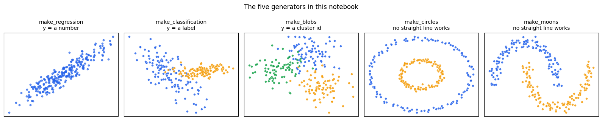
Output from this notebook.
codecell 2
import matplotlib.pyplot as plt
from sklearn.datasets import make_regression
1 — make_regression: a straight line with noise on top
Regression means the answer is a number — a price, a temperature, a
salary. Not a category.
make_regression builds that kind of data from one formula:
y = X · coef + bias + noise
│ │ │ │ └── random wobble, size set by you
│ │ │ └── a constant shift (default 0)
│ │ └── the slope(s) sklearn invents and keeps secret
│ └── the input columns, drawn from a normal distribution
└── the answer
Your call:
x, y = make_regression(n_features=1, noise=5, n_samples=10000, random_state=0)
In plain English: "Give me 10,000 rows and 1 input column. Add noise of size 5.
Do it the same way every time."
Every parameter
Parameter
Default
What it does
n_samples
100
how many rows
n_features
100
how many input columns in total
n_informative
10
how many of those columns actually move y. The rest are decoration
n_targets
1
how many answer columns. Above 1, y becomes 2-D
bias
0.0
the intercept — the value of y when every input is 0
noise
0.0
standard deviation of the wobble added to y. 0 gives a perfect line
coef
False
True also returns the true slopes, so you can grade a model
shuffle
True
shuffles both the rows and the column order
effective_rank
None
makes columns correlated with each other, the way real data is
tail_strength
0.5
only used together with effective_rank
random_state
None
the seed. Fix it, or the data changes on every run
⚠️ The default is 100 columns, not 1.n_features=100 with
n_informative=10 means 90 useless columns if you forget to say otherwise. You
asked for n_features=1, so here n_informative is 1 as well.
The function returns a tuple of two arrays, and this line unpacks it:
x , y = make_regression(...)
│ │
│ └── the answer: 1-D, one number per row
└── the inputs: 2-D, rows × columns
Both are plain NumPy arrays, not DataFrames. There are no column names and
no index. That is normal — scikit-learn works on numbers, and Pandas is only
the door you walk in through.
print("x shape:", x.shape, "-> 10000 rows, 1 column (2-D: a table)")
print("y shape:", y.shape, " -> 10000 answers (1-D: a list)")
print("dtypes :", x.dtype, "/", y.dtype)
print()
print("first 3 rows of x:", x[:3].ravel().round(3))
print("first 3 rows of y:", y[:3].round(3))
print()
print("x[0] ->", x[0].round(3), " one ROW (still an array, because a row can have many columns)")
print("x[:, 0] ->", x[:5, 0].round(3), "... one COLUMN, first 5 values")
Output
x shape: (10000, 1) -> 10000 rows, 1 column (2-D: a table)
y shape: (10000,) -> 10000 answers (1-D: a list)
dtypes : float64 / float64
first 3 rows of x: [ 0.583 -1.311 -0.763]
first 3 rows of y: [ 7.013 -17.416 1.146]
x[0] -> [0.583] one ROW (still an array, because a row can have many columns)
x[:, 0] -> [ 0.583 -1.311 -0.763 0.177 -1.307] ... one COLUMN, first 5 values
Why the shapes are different, and why the names are X and y.
Name
Shape
Meaning
Why the capital letter
X
2-D (rows, columns)
what the model is allowed to see
capital, because it is a matrix
y
1-D (rows,)
what the model must predict
lowercase, because it is a vector
This is a maths convention that scikit-learn adopted, and the whole library
expects it. model.fit(X, y) will reject a 1-D X and tell you to reshape.
make_regression already hands you a 2-D X, so nothing to fix here.
Reading the array.x[0] is a row. x[:, 0] is a column. The comma
separates the two axes: x[rows, columns]. That second form is the one your
scatter plots use further down, and it is where the last cell of this notebook
goes wrong.
2 — Look at the data
matplotlib was already imported in the first cell, so this import does
nothing new. Re-importing is harmless in Python — the module is cached after
the first time — so leave it. It costs nothing and it makes the cell below
runnable on its own.
The band goes up to the right, so the invented slope was positive. The band has
width — that width is the noise=5 you asked for. With noise=0 it would be
a perfectly thin line.
One practical point. You are drawing 10,000 points at the default marker
size. They pile on top of each other, so the middle is a solid blob and you
cannot tell where the data is dense. Two fixes: shrink the marker (s) and
make each point see-through (alpha).
codecell 14
plt.figure(figsize=(6.5, 4))
plt.scatter(x, y, s=6, alpha=0.15, color="#2563eb")
plt.xlabel("x (the single input column)")
plt.ylabel("y (the answer)")
plt.title("Same 10,000 points, with small markers and transparency")
plt.tight_layout()
plt.show()
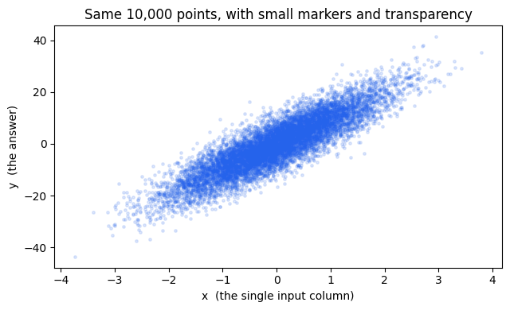
Output from this notebook.
The noise knob, drawn
noise is the standard deviation of the random number added to every y.
It is the only thing standing between your data and a perfect straight line.
Turn it up and the relationship gets harder to see — which is exactly how you
test whether a model is finding a real pattern or fooling itself.
codecell 16
fig, axes = plt.subplots(1, 3, figsize=(12, 3.6), sharey=True)
for ax, level in zip(axes, [0, 5, 30]):
nx, ny = make_regression(n_samples=400, n_features=1, noise=level, random_state=0)
ax.scatter(nx, ny, s=12, alpha=0.6, color="#2563eb")
ax.set_title(f"noise={level}", fontsize=11)
ax.set_xlabel("x")
axes[0].set_ylabel("y")
axes[0].text(0.05, 0.9, "a perfect line:\nthe formula, exactly", transform=axes[0].transAxes,
fontsize=9, va="top", color="#15803d")
axes[2].text(0.05, 0.9, "same line underneath,\nburied in randomness", transform=axes[2].transAxes,
fontsize=9, va="top", color="#b45309")
fig.suptitle("noise is the difficulty dial", fontsize=12)
plt.tight_layout()
plt.show()
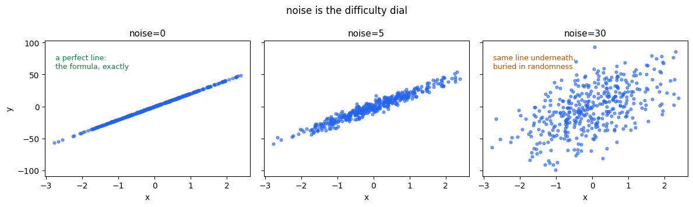
Output from this notebook.
coef=True — the answer key
This is the reason synthetic data exists. Ask for the coefficient and
scikit-learn tells you the true slope it used. Later, when you fit a
LinearRegression, you can compare model.coef_ against this number and see
how close the model got.
bias is the intercept — where the line crosses x = 0. Below it is set to
50, so the whole cloud lifts by 50.
codecell 18
cx, cy, true_slope = make_regression(n_samples=300, n_features=1, noise=5,
bias=50, coef=True, random_state=0)
slope = float(np.ravel(true_slope)[0])
print(f"true slope (coef) : {slope:.4f}")
print(f"true intercept : 50 (this is the `bias` argument)")
print(f"so the hidden formula is: y = {slope:.2f} * x + 50 + noise(sd=5)")
line_x = np.linspace(cx.min(), cx.max(), 2)
plt.figure(figsize=(6.5, 4))
plt.scatter(cx, cy, s=14, alpha=0.5, color="#2563eb", label="generated points")
plt.plot(line_x, slope * line_x + 50, color="#dc2626", linewidth=2.5,
label=f"the true line: y = {slope:.1f}x + 50")
plt.xlabel("x"); plt.ylabel("y")
plt.title("The line a model would be trying to recover")
plt.legend()
plt.tight_layout()
plt.show()
Output
true slope (coef) : 62.8898
true intercept : 50 (this is the `bias` argument)
so the hidden formula is: y = 62.89 * x + 50 + noise(sd=5)
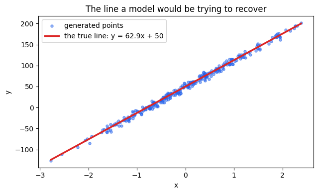
Output from this notebook.
More than one column: where the scatter plot stops working
Your call used n_features=1, so one scatter plot showed everything. That is
rare. Real data has many columns, and a 2-D chart can only ever show one of
them against y at a time.
n_informative decides how many columns matter. Below: 3 columns, only 1 of
them informative. Two of the three panels are pure noise — and because
shuffle=True is the default, you do not get to know in advance which panel
that will be.
codecell 20
mx, my = make_regression(n_samples=300, n_features=3, n_informative=1,
noise=5, random_state=0)
fig, axes = plt.subplots(1, 3, figsize=(12, 3.6), sharey=True)
for j, ax in enumerate(axes):
correlation = np.corrcoef(mx[:, j], my)[0, 1]
ax.scatter(mx[:, j], my, s=12, alpha=0.6, color="#2563eb")
ax.set_title(f"column {j} (corr with y = {correlation:+.2f})", fontsize=10)
ax.set_xlabel(f"x[:, {j}]")
axes[0].set_ylabel("y")
fig.suptitle("3 columns, 1 informative — the other two are decoration", fontsize=12)
plt.tight_layout()
plt.show()
print("Only one column has a strong correlation. That is the informative one.")
print("The other two exist so that feature-selection code has something to throw away.")
Output
Only one column has a strong correlation. That is the informative one.
The other two exist so that feature-selection code has something to throw away.
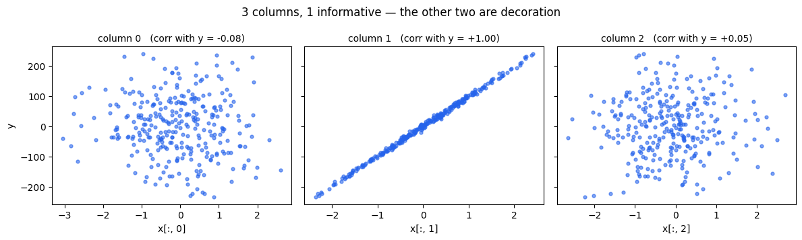
Output from this notebook.
3 — make_classification: groups instead of numbers
Classification means the answer is a label: fraud / not fraud,
spam / not spam, 0 / 1. Not a quantity.
How the data is actually built
This generator is more elaborate than the others, and knowing the recipe
explains every strange chart you will see below.
1. place one corner per cluster on the corners of a cube <- n_clusters_per_class, class_sep
2. sprinkle normal points around each corner <- n_samples
3. those coordinates become the INFORMATIVE columns <- n_informative
4. add columns that are random mixes of the informative ones <- n_redundant
5. add exact copies of some columns <- n_repeated
6. fill any remaining columns with pure noise <- the leftovers: "useless"
7. flip a few labels at random, on purpose <- flip_y
8. shuffle the rows AND the column order <- shuffle
So a column can be one of four things:
Column type
What it holds
Should a model use it?
informative
a real coordinate of the cluster
yes — this is the signal
redundant
a linear mix of the informative ones
it adds no new information
repeated
an exact copy of another column
no
useless
pure noise, unrelated to y
no — and a weak model will still try
That last group is the point. Real datasets are full of columns that look
important and are not. This generator lets you create that situation on demand
and check whether your feature selection throws the right ones away.
codecell 22
from sklearn.datasets import make_classification
Every parameter
Parameter
Default
What it does
n_samples
100
how many rows
n_features
20
how many columns in total
n_informative
2
how many carry real signal
n_redundant
2
how many are linear mixes of the informative ones
n_repeated
0
how many are exact copies
n_classes
2
how many labels
n_clusters_per_class
2
how many separate blobs each class is split into
weights
None
class balance, e.g. [0.9, 0.1] for an imbalanced problem
flip_y
0.01
fraction of labels flipped at random — deliberate mislabelling
class_sep
1.0
how far apart the classes sit. Bigger = easier
hypercube
True
put the cluster centres on cube corners rather than a random shape
shift / scale
0.0 / 1.0
move and stretch the columns afterwards
shuffle
True
shuffle the rows and the column order
random_state
None
the seed
The rule that catches people:n_informative + n_redundant + n_repeated ≤ n_features.
Your call sets n_features=5 and leaves the rest at their defaults, so:
Two observations about your call, neither of them a bug:
No random_state. Every re-run of this cell produces a completely
different dataset and a different picture. Fine while exploring; add a seed
the moment you want to compare two runs.
flip_y=0.01 is still on. About 1% of the labels are wrong on purpose.
That is why you should not expect — or trust — a perfect separation.
<matplotlib.collections.PathCollection at 0x11aa08050>
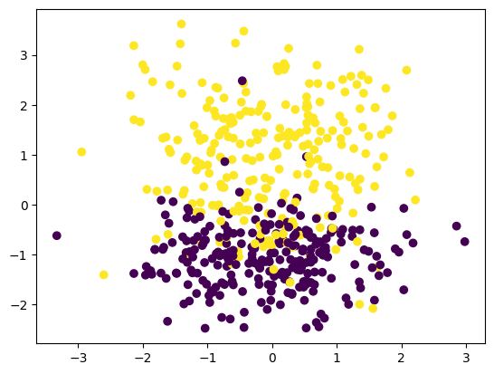
Output from this notebook.
Two things in that output.
plt.scatter(...) returns the artist it drew, and Jupyter prints the last
expression of a cell. That is the <matplotlib.collections.PathCollection ...>
line above the chart. Add a semicolon (plt.scatter(...);) or call
plt.show() to hide it.
More importantly: you plotted columns 0 and 1, but you do not know what
columns 0 and 1 are.shuffle=True shuffled the column order, so the two
informative columns landed somewhere random among the five. If this chart looks
like a mess, that is the most likely reason — not a broken generator.
The section after next takes the shuffle off, so the roles become known.
The two arrays for a classification problem
x is the same kind of table as before: 500 rows × 5 columns of floats.
y is different — it holds only 0 and 1, one label per row.
print("y contains only:", np.unique(y), " counts:", np.bincount(y))
print("x shape:", x.shape, " y shape:", y.shape)
print()
# Why random_state matters: two calls with no seed, then two with a seed.
a, _ = make_classification(n_classes=2, n_features=5, n_samples=5)
b, _ = make_classification(n_classes=2, n_features=5, n_samples=5)
print("no seed , run 1, first row:", a[0].round(2))
print("no seed , run 2, first row:", b[0].round(2), " <- different data")
c, _ = make_classification(n_classes=2, n_features=5, n_samples=5, random_state=7)
d, _ = make_classification(n_classes=2, n_features=5, n_samples=5, random_state=7)
print("seed = 7 , run 1, first row:", c[0].round(2))
print("seed = 7 , run 2, first row:", d[0].round(2), " <- identical, every time")
Output
y contains only: [0 1] counts: [249 251]
x shape: (500, 5) y shape: (500,)
no seed , run 1, first row: [ 1.8 -0.61 -0.31 -2.84 -1.21]
no seed , run 2, first row: [-0.89 -0.09 -1.04 -1.27 -1.55] <- different data
seed = 7 , run 1, first row: [-0.55 1.05 -0.82 0.02 1.07]
seed = 7 , run 2, first row: [-0.55 1.05 -0.82 0.02 1.07] <- identical, every time
The column anatomy, made visible
Set shuffle=False and the column order becomes fixed and documented:
Now the roles are known, so the same four scatter plots you drew by hand later
in this notebook can be read properly. n_clusters_per_class=1 is used here so
each class is a single blob and the picture stays clean.
codecell 31
demo_x, demo_y = make_classification(n_samples=500, n_features=5, n_classes=2,
n_informative=2, n_redundant=2, n_repeated=0,
n_clusters_per_class=1,
shuffle=False, random_state=1)
roles = ["informative", "informative", "redundant", "redundant", "useless"]
# 5 columns, but how many independent directions are really in there?
print("columns in the table :", demo_x.shape[1])
print("independent directions (rank) :", np.linalg.matrix_rank(demo_x))
print("-> the 2 redundant columns are mixes of the informative ones. They add nothing.")
print()
for j, role in enumerate(roles):
gap = demo_x[demo_y == 1, j].mean() - demo_x[demo_y == 0, j].mean()
print(f"column {j} {role:<12} distance between class means = {gap:+.2f}")
fig, axes = plt.subplots(1, 4, figsize=(15, 3.6))
for ax, other in zip(axes, [1, 2, 3, 4]):
scatter_classes(ax, demo_x, demo_y, cols=(0, other),
title=f"col 0 ({roles[0]}) vs col {other} ({roles[other]})")
ax.set_xlabel("x[:, 0]"); ax.set_ylabel(f"x[:, {other}]")
axes[0].legend(fontsize=8, loc="best")
fig.suptitle("shuffle=False, so we know what each column is", fontsize=12)
plt.tight_layout()
plt.show()
Output
columns in the table : 5
independent directions (rank) : 3
-> the 2 redundant columns are mixes of the informative ones. They add nothing.
column 0 informative distance between class means = +0.04
column 1 informative distance between class means = -2.00
column 2 redundant distance between class means = +1.05
column 3 redundant distance between class means = -0.49
column 4 useless distance between class means = +0.09
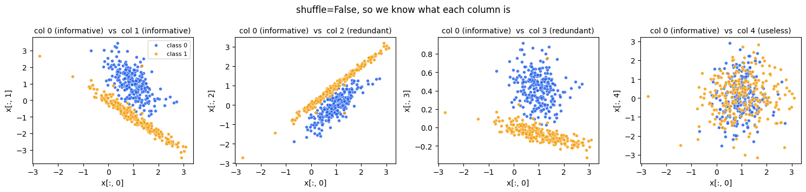
Output from this notebook.
How to read those four panels.
col 0 vs col 1 — informative against informative. Two clear groups, and
almost all of the separation is vertical. The printed table says why: the
class centres are 2.00 apart on column 1 and only 0.04 apart on column 0.
So "informative" does not mean "separates on its own." It means the column
was used to build the space. Column 0 looks useless in a single scatter and is
still part of the real structure. This is why you look at pairs, and why a
model looks at all the columns at once instead of filtering them one by one.
col 0 vs col 2 and col 0 vs col 3 — informative against redundant.
These separate too, and the points sit in a tilted band. That band is the
visual signature of a linear dependency: the redundant column is a mix of
columns 0 and 1, so it inherits their separation while adding nothing new.
col 0 vs col 4 — informative against useless. One round, mixed cloud. No
straight line at any angle helps, because neither axis carries class signal
by itself.
Engineering view. A redundant column is a derived field — like storing
total_price next to unit_price and quantity. It is not wrong, but it is
not new information, and models that assume independent inputs (naive Bayes,
plain linear regression) get unstable when you feed them several of these.
The difficulty knobs
Four parameters change how hard the problem is. Each panel below changes
exactly one of them, so you can see what it costs.
how distinguishable the two groups genuinely are. Low values are the honest case — fraud looks a lot like normal spending
flip_y
labelling errors. Someone ticked the wrong box in the source system
weights
class imbalance. 1 fraud in 1,000 transactions. Accuracy becomes a useless metric here — that is the lesson this knob exists to teach
n_clusters_per_class
one label, several different causes. "Churn" from price and "churn" from bad support are two separate blobs wearing the same label
The last one explains your own charts earlier: the default is 2, so each
class is two separate patches. A model that assumes one blob per class will
struggle, and the picture looks messier than a beginner expects.
4 — make_blobs: round groups, for clustering
make_blobs drops a few centre points into space and scatters normal noise
around each one. That is the entire algorithm.
The difference from make_classification is what ymeans:
make_classification y = the true label (supervised: you are given it)
make_blobs y = which blob it came from
(unsupervised: you normally THROW IT AWAY and
ask the algorithm to rediscover the groups)
So make_blobs is the test rig for KMeans, DBSCAN, and hierarchical
clustering. You keep y only to check the algorithm's answer afterwards.
Every parameter
Parameter
Default
What it does
n_samples
100
total rows — or a list, one count per centre, e.g. [300, 100, 50]
n_features
2
how many columns. 2 because you want to draw it
centers
None
a number of blobs, or an array of exact coordinates
cluster_std
1.0
how spread out each blob is. One number, or one per blob
center_box
(-10, 10)
the square the random centres are drawn from
shuffle
True
shuffle the rows
random_state
None
the seed
return_centers
False
True also returns the true centre coordinates
There is no n_informative, no n_redundant, no flip_y. Every column of
make_blobs is real. That is deliberate: clustering is hard enough without
decoy columns.
codecell 36
from sklearn.datasets import make_blobs
Your call:
x, y = make_blobs(n_samples=500, centers=3, n_features=2, random_state=0)
"500 rows, 3 groups, 2 columns so I can plot it, and the same result every
time." The centres themselves are chosen at random inside center_box, which
is why the seed matters here too.
codecell 38
x, y = make_blobs(n_samples=500, centers=3, n_features=2,random_state=0)
codecell 39
plt.scatter(x[:,0],x[:,1],c=y)
Output
<matplotlib.collections.PathCollection at 0x11db07250>
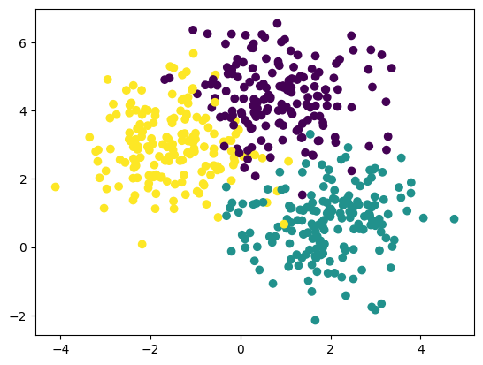
Output from this notebook.
Three clean, round clouds. They are round because the noise added around
each centre is the same in every direction (cluster_std is one number).
Two parameters change everything about this picture: cluster_std decides
whether the groups stay apart, and centers lets you place them by hand
instead of letting the seed choose.
codecell 41
fig, axes = plt.subplots(1, 3, figsize=(13, 3.8), sharex=True, sharey=True)
for ax, spread in zip(axes, [0.5, 1.5, 3.0]):
bx, by, centres = make_blobs(n_samples=400, centers=3, n_features=2,
cluster_std=spread, random_state=0,
return_centers=True)
scatter_classes(ax, bx, by, title=f"cluster_std={spread}")
ax.scatter(centres[:, 0], centres[:, 1], marker="X", s=180, c="#111827",
edgecolor="white", linewidth=1.5, zorder=5)
axes[0].text(0.03, 0.03, "tight: any algorithm finds these", transform=axes[0].transAxes,
fontsize=8, color="#15803d")
axes[2].text(0.03, 0.03, "merged: 'how many groups?' has no clean answer",
transform=axes[2].transAxes, fontsize=8, color="#b45309")
fig.suptitle("cluster_std decides whether clustering is even possible (X = true centre)", fontsize=12)
plt.tight_layout()
plt.show()
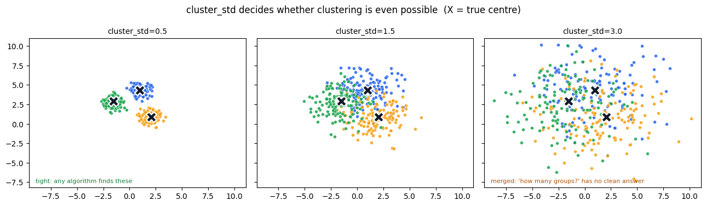
Output from this notebook.
Placing the centres yourself
centers=3 lets the seed pick the locations. Passing coordinates instead makes
the dataset exactly reproducible and lets you build the awkward cases on
purpose — two blobs close together and one far away, or blobs of very different
sizes and densities. That is how you find out where KMeans goes wrong, since it
assumes round clusters of similar size.
codecell 43
chosen_centres = np.array([[0.0, 0.0],
[1.5, 1.5], # deliberately close to the first
[8.0, 1.0]]) # far away
hx, hy = make_blobs(n_samples=[300, 300, 60], # different size per blob
centers=chosen_centres,
cluster_std=[0.6, 0.6, 1.8], # different spread per blob
random_state=0)
print("rows per blob:", np.bincount(hy))
fig, ax = plt.subplots(figsize=(7, 4))
scatter_classes(ax, hx, hy, title="Centres, sizes and spreads chosen by hand")
ax.scatter(chosen_centres[:, 0], chosen_centres[:, 1], marker="X", s=200,
c="#111827", edgecolor="white", linewidth=1.5, zorder=5)
ax.legend(fontsize=8)
plt.tight_layout()
plt.show()
Output
rows per blob: [300 300 60]
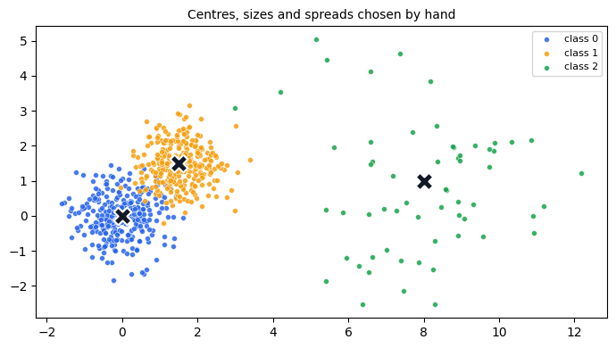
Output from this notebook.
5 — make_circles: when a straight line cannot work
Everything so far could be separated, more or less, by drawing a straight line
across the picture. make_circles exists to break that.
One class is a ring. The other class is a smaller ring inside it. No
straight line can put one class on one side and the other class on the other —
you would need a circle, or a model that can bend.
Every parameter
Parameter
Default
What it does
n_samples
100
total rows, split evenly between the two rings — or (outer, inner)
factor
0.8
inner radius ÷ outer radius. Must be 0 ≤ factor < 1. Small = a big gap
noise
None
standard deviation of Gaussian noise added to the point positions
shuffle
True
shuffle the rows
random_state
None
the seed
⚠️ noise means something different here than in make_regression. There it
wobbled the answer y. Here it wobbles the coordinates, thickening each
ring into a fuzzy band.
Your call uses noise=0.03, which is a light dusting — the rings stay clearly
separate. The default factor=0.8 puts the inner ring quite close to the outer
one.
codecell 45
from sklearn.datasets import make_circles
x, y = make_circles(n_samples=500,random_state=1,noise=0.03)
codecell 46
plt.scatter(x[:,0],x[:,1],c=y)
Output
<matplotlib.collections.PathCollection at 0x11de11310>
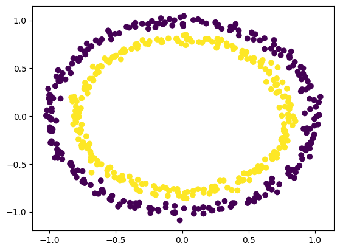
Output from this notebook.
A bullseye. Two well-formed rings, one inside the other.
Now watch what factor and noise do. factor moves the inner ring outwards
until the two touch; noise blurs both until the gap disappears.
codecell 48
fig, axes = plt.subplots(1, 4, figsize=(15, 3.8))
variants = [
("factor=0.2, noise=0.03", dict(factor=0.2, noise=0.03)),
("factor=0.5, noise=0.03", dict(factor=0.5, noise=0.03)),
("factor=0.8, noise=0.03\n(your call: the default)", dict(factor=0.8, noise=0.03)),
("factor=0.8, noise=0.15", dict(factor=0.8, noise=0.15)),
]
for ax, (title, extra) in zip(axes, variants):
rx, ry = make_circles(n_samples=400, random_state=1, **extra)
scatter_classes(ax, rx, ry, title=title, size=12)
ax.set_xticks([]); ax.set_yticks([])
ax.set_aspect("equal")
axes[0].legend(fontsize=8, loc="upper right")
fig.suptitle("factor sets the gap between the rings; noise blurs them", fontsize=12)
plt.tight_layout()
plt.show()
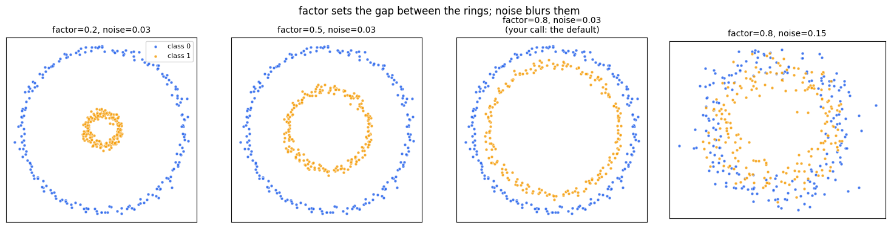
Output from this notebook.
6 — make_moons: two interlocking crescents
Same purpose as make_circles, different shape. Two half-circles hooked into
each other. Again, no straight line separates them.
Moons are the picture you see in almost every tutorial on decision boundaries,
because the correct boundary is an obvious S-curve that a human can draw by eye
and a linear model cannot produce.
Every parameter
Parameter
Default
What it does
n_samples
100
total rows — or (upper, lower) for an uneven split
noise
None
Gaussian noise added to the point positions
shuffle
True
shuffle the rows
random_state
None
the seed
That is the whole list. There is no shape control — the crescents are always
the same crescents. Only noise changes the difficulty.
codecell 50
from sklearn.datasets import make_moons
x, y = make_moons(n_samples=500,random_state=10,noise=0.1)
codecell 51
plt.scatter(x[:,0],x[:,1],c=y)
Output
<matplotlib.collections.PathCollection at 0x11df74f50>
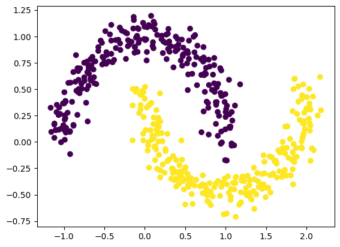
Output from this notebook.
Two crescents, slightly fuzzy.noise=0.1 is the usual choice: enough
blur to be realistic, not enough to destroy the shape.
Below, the noise is swept — and then the claim "no straight line works" is
actually tested rather than asserted.
codecell 53
fig, axes = plt.subplots(1, 4, figsize=(15, 3.6))
for ax, level in zip(axes, [0.0, 0.1, 0.25, 0.45]):
sx, sy = make_moons(n_samples=400, noise=level, random_state=10)
scatter_classes(ax, sx, sy, title=f"noise={level}", size=12)
ax.set_xticks([]); ax.set_yticks([])
axes[0].text(0.03, 0.03, "the pure shape", transform=axes[0].transAxes,
fontsize=8, color="#15803d")
axes[3].text(0.03, 0.03, "the shape is gone", transform=axes[3].transAxes,
fontsize=8, color="#b45309")
axes[0].legend(fontsize=8, loc="upper right")
fig.suptitle("make_moons: noise is the only difficulty dial", fontsize=12)
plt.tight_layout()
plt.show()
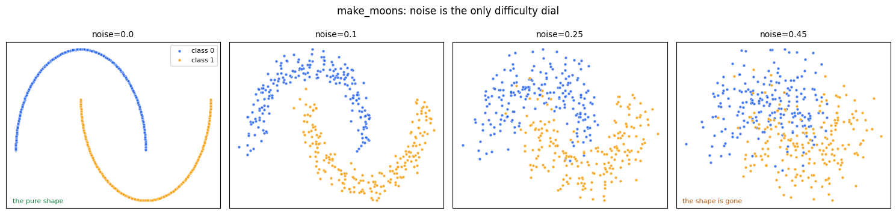
Output from this notebook.
Testing the claim: how good can a straight line be?
No model is fitted here — that comes later in the course. Instead this is brute
force: try every angle of straight line and every cut position, and
keep the best score. That is the ceiling any straight-line model could reach.
Compare the ceiling across three datasets and the point makes itself.
codecell 55
def best_straight_line_score(X, labels, angles=180, cuts=99):
"""Brute-force the best accuracy any straight boundary could reach."""
best = 0.0
for theta in np.linspace(0, np.pi, angles, endpoint=False):
projected = X @ np.array([np.cos(theta), np.sin(theta)])
for cut in np.quantile(projected, np.linspace(0.01, 0.99, cuts)):
side = (projected > cut).astype(int)
best = max(best, (side == labels).mean(), (1 - side == labels).mean())
return best
tests = {
"make_blobs (2 blobs)": make_blobs(n_samples=400, centers=2, n_features=2, random_state=0),
"make_moons (noise=0.1)": make_moons(n_samples=400, noise=0.1, random_state=10),
"make_circles (factor=0.5)": make_circles(n_samples=400, noise=0.03, factor=0.5, random_state=1),
}
names, scores = [], []
for name, (tx, ty) in tests.items():
score = best_straight_line_score(tx, ty)
names.append(name); scores.append(score)
print(f"{name:<26} best possible straight line: {score:.1%}")
fig, ax = plt.subplots(figsize=(7.5, 3))
bars = ax.barh(names, scores, color=["#16a34a", "#f59e0b", "#dc2626"])
ax.axvline(0.5, color="#6b7280", linestyle="--", linewidth=1)
ax.text(0.505, 2.35, "coin flip", fontsize=8, color="#6b7280")
ax.set_xlim(0, 1); ax.set_xlabel("best accuracy a straight boundary can reach")
for bar, score in zip(bars, scores):
ax.text(score - 0.03, bar.get_y() + bar.get_height() / 2, f"{score:.0%}",
va="center", ha="right", color="white", fontsize=10)
ax.invert_yaxis()
ax.set_title("This is why make_circles and make_moons exist")
plt.tight_layout()
plt.show()
Output
make_blobs (2 blobs) best possible straight line: 98.0%
make_moons (noise=0.1) best possible straight line: 89.0%
make_circles (factor=0.5) best possible straight line: 66.5%
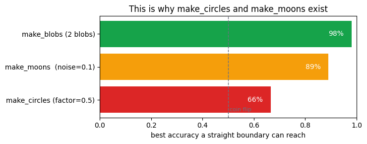
Output from this notebook.
Read the bars.
blobs — 98%. A straight line gets essentially everything right. A linear
model is the correct tool here, and anything fancier is wasted effort.
moons — 89%. The best possible line still misses about one point in nine,
and it can never do better. The crescents overlap along every direction you
could cut.
circles — 66%. Half of that is free: guessing one class already gets 50%.
The inner ring is completely surrounded, so every straight cut leaves both
classes on both sides. A linear model here is close to useless.
To solve the bottom two you need a model that can bend a boundary: KNN, a
decision tree, an SVM with an RBF kernel, or a small neural network. That is
the whole reason these two generators are in the library.
7 — Your own experiment: plotting column 0 against every other column
The next four cells are the most interesting thing in this notebook, because
you found a real problem by hand.
x, y = make_classification(n_classes=2, n_features=5, n_samples=10, random_state=1)
plt.scatter(x[:, 0], x[:, 1], c=y) # then 2, then 3, then 4
Two changes from your earlier call, both good ones:
random_state=1 — the dataset is now fixed, so the charts are comparable.
n_samples=10 — only 10 points, so you can see individual rows.
What you are doing is a manual pair plot: hold one column fixed and swap the
other, looking for the pair where the colours separate. This is exactly what
seaborn.pairplot automates, and it is a normal first move in EDA.
Watch how different the four charts look, and hold the question: why does the
same column 0 look useful in one chart and useless in the next?
⚠️ With only 10 points, do not over-read any of them. Ten points can look
separated by pure chance.
codecell 58
from sklearn.datasets import make_classification
x,y = make_classification(n_classes=2,n_features=5,n_samples=10,random_state=1)
plt.scatter(x[:,0],x[:,1],c=y)
Output
<matplotlib.collections.PathCollection at 0x11e163390>
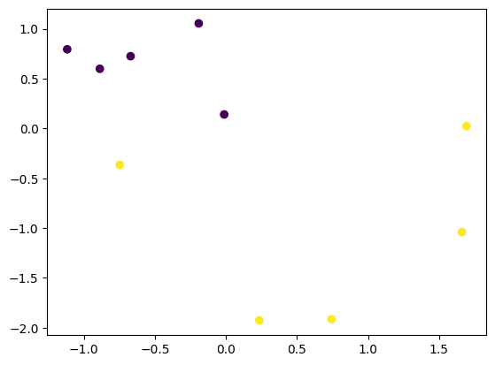
Output from this notebook.
codecell 59
plt.scatter(x[:,0],x[:,2],c=y)
Output
<matplotlib.collections.PathCollection at 0x11e1f51d0>
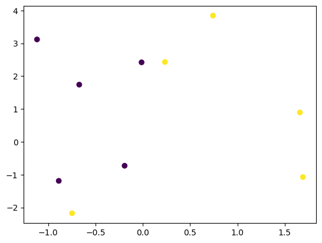
Output from this notebook.
codecell 60
plt.scatter(x[:,0],x[:,3],c=y)
Output
<matplotlib.collections.PathCollection at 0x11e24afd0>
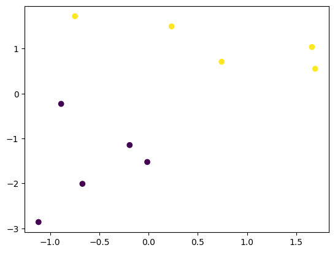
Output from this notebook.
codecell 61
plt.scatter(x[:,0],x[:,4],c=y)
Output
<matplotlib.collections.PathCollection at 0x11e2ec690>
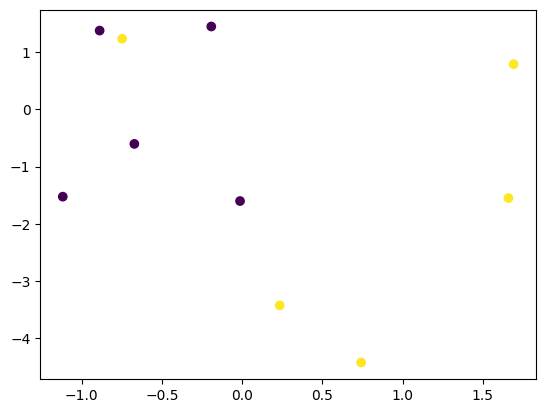
Output from this notebook.
Why the four charts disagree
shuffle=True is the default, so the column order was scrambled when the data
was made. Column 0 is not "the first feature" — it is whichever feature landed
in slot 0.
The roles can be recovered exactly. Generate the same seed twice, once with
shuffle=False (where the order is known: informative, redundant, useless) and
once as you called it. Shuffling reorders columns but does not change the
values inside a column, so sorting each column and matching gives the map.
codecell 63
def column_roles(**call):
# Work out what each column of a make_classification call really is.
# Trick: generate the same seed twice - once with shuffle=False, where the
# column order is documented, and once as called. Shuffling moves columns
# around but never changes the values inside one, so sorting each column
# and matching the two sets recovers the mapping exactly.
shuffled, _ = make_classification(**call)
ordered, _ = make_classification(**call, shuffle=False)
# documented order for 5 columns with the default 2 informative + 2 redundant:
known = ["informative", "informative", "redundant", "redundant", "useless"]
roles = {}
for j in range(shuffled.shape[1]):
for k in range(ordered.shape[1]):
if np.allclose(np.sort(shuffled[:, j]), np.sort(ordered[:, k])):
roles[j] = known[k]
break
return roles
call = dict(n_classes=2, n_features=5, n_samples=10, random_state=1)
learner_x, learner_y = make_classification(**call) # exactly your cell
column_role = column_roles(**call)
for j in range(5):
print(f"your x[:, {j}] is {column_role[j]}")
print()
print("so the four charts you drew were really:")
for other in [1, 2, 3, 4]:
print(f" x[:, 0] vs x[:, {other}] -> {column_role[0]} vs {column_role[other]}")
fig, axes = plt.subplots(1, 4, figsize=(15, 3.6))
for ax, other in zip(axes, [1, 2, 3, 4]):
scatter_classes(ax, learner_x, learner_y, cols=(0, other), size=90,
title=f"x[:,0] vs x[:,{other}]\n{column_role[0]} vs {column_role[other]}")
ax.set_xlabel("x[:, 0]"); ax.set_ylabel(f"x[:, {other}]")
axes[0].legend(fontsize=8)
fig.suptitle("Your four charts, with each column's real job printed on top", fontsize=12)
plt.tight_layout()
plt.show()
Output
your x[:, 0] is useless
your x[:, 1] is redundant
your x[:, 2] is redundant
your x[:, 3] is informative
your x[:, 4] is informative
so the four charts you drew were really:
x[:, 0] vs x[:, 1] -> useless vs redundant
x[:, 0] vs x[:, 2] -> useless vs redundant
x[:, 0] vs x[:, 3] -> useless vs informative
x[:, 0] vs x[:, 4] -> useless vs informative
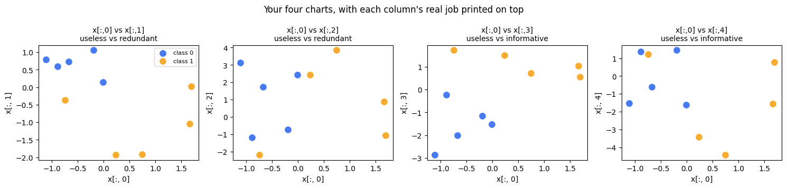
Output from this notebook.
The result for this seed:
x[:, 0] -> useless (pure noise, nothing to do with y)
x[:, 1] -> redundant
x[:, 2] -> redundant
x[:, 3] -> informative
x[:, 4] -> informative
So every chart you drew had a pure noise column on the horizontal axis.
Now look at those four panels again, carefully. In all four the blue points
sit on the left and the orange points on the right — a split along column 0,
the column we just proved is noise.
That split is a coincidence, and it is the most valuable thing in this
notebook. With n_samples=10 there are five points per class. Five random
values landing to the left of five other random values is not a rare event. Ten
points can be made to look like almost any pattern.
The cell below repeats the identical call with 500 rows instead of 10. The
useless column's fake separation disappears, and the two informative columns
show the structure that was there all along.
The general lesson, and it is not a synthetic-data lesson. Column position
tells you nothing about a column's value, and a small sample tells you nothing
about whether a pattern is real. You find both out by testing, not by looking.
The two printed percentages make the same point without any eyeballing: a pair
containing the useless column tops out near a coin flip, while the pair of
informative columns is separable by a straight line about nine times out of ten.
Engineering view. It is the same reason you do not index into a result set
by column number. row.get(3) compiles and runs; row.get("customer_id")
tells the truth. NumPy has no column names, which is precisely why people load
data through Pandas, keep the names as long as possible, and only drop to raw
arrays at the last moment.
codecell 65
big_call = dict(n_classes=2, n_features=5, n_samples=500, random_state=1)
big_x, big_y = make_classification(**big_call)
big_role = column_roles(**big_call)
print("with 500 rows the roles land as:", big_role)
useless_col = next(j for j, r in big_role.items() if r == "useless")
informative_cols = [j for j, r in big_role.items() if r == "informative"]
fig, axes = plt.subplots(1, 3, figsize=(14, 4))
scatter_classes(axes[0], learner_x, learner_y, cols=(0, 3), size=90,
title="10 rows\nuseless column on x - looks split")
axes[0].set_xlabel("the useless column")
axes[0].set_ylabel("an informative column")
scatter_classes(axes[1], big_x, big_y, cols=(useless_col, informative_cols[0]), size=12,
title="500 rows\nsame kind of pair - the split is gone")
axes[1].set_xlabel(f"the useless column, x[:, {useless_col}]")
scatter_classes(axes[2], big_x, big_y, cols=tuple(informative_cols), size=12,
title="500 rows\nboth informative columns - the real structure")
axes[2].set_xlabel(f"x[:, {informative_cols[0]}]")
axes[2].set_ylabel(f"x[:, {informative_cols[1]}]")
axes[0].legend(fontsize=8)
fig.suptitle("Ten points can look like anything. Five hundred cannot.", fontsize=12)
plt.tight_layout()
plt.show()
# the same brute-force straight line as before, now as a number
pair_useless = big_x[:, [useless_col, informative_cols[0]]]
pair_real = big_x[:, informative_cols]
print(f"useless + informative -> best straight line: {best_straight_line_score(pair_useless, big_y):.1%}")
print(f"both informative -> best straight line: {best_straight_line_score(pair_real, big_y):.1%}")
Output
with 500 rows the roles land as: {0: 'informative', 1: 'redundant', 2: 'redundant', 3: 'useless', 4: 'informative'}
useless + informative -> best straight line: 57.2%
both informative -> best straight line: 94.0%
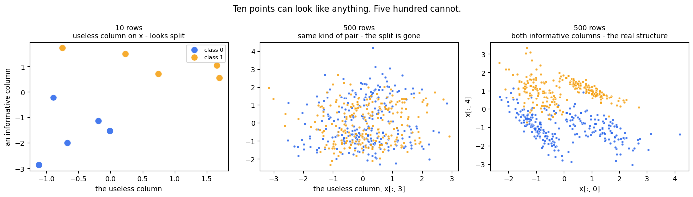
Output from this notebook.
8 — The last cell: read the error before you run it
plt.scatter(x[:, 0], x[:, 5], c=y)
Before running: x has 5 columns. Python counts from 0. So the valid
column numbers are 0, 1, 2, 3, 4. There is no 5.
column number: 0 1 2 3 4
┌─────┬─────┬─────┬─────┬─────┐
x = │ │ │ │ │ │ x.shape -> (10, 5)
└─────┴─────┴─────┴─────┴─────┘
↑
x[:, 5] points here — off the end
The cell below is kept on purpose. A failure you understand is worth more
than a cell you deleted.
codecell 67
plt.scatter(x[:,0],x[:,5],c=y)
Output
---------------------------------------------------------------------------
IndexError Traceback (most recent call last)
Cell In[38], line 1
----> 1 plt.scatter(x[:,0],x[:,5],c=y)
IndexError: index 5 is out of bounds for axis 1 with size 5
Reading the traceback
IndexError: index 5 is out of bounds for axis 1 with size 5
│ │ │
│ │ └── that axis has 5 slots
│ └── axis 1 = columns (axis 0 = rows)
└── the number you asked for
size 5 and index 5 in the same sentence is the classic off-by-one. Size 5
means the last valid index is 4.
Two habits that prevent it.
Check the shape before indexing: x.shape → (10, 5).
Never hardcode a column count. Loop over range(x.shape[1]) and the code
adapts when you change n_features.
Here is your experiment written that way. It draws every column against
column 0 automatically, and it cannot run off the end.
codecell 69
rows, columns = learner_x.shape
print(f"the array has {rows} rows and {columns} columns")
print(f"valid column indexes: 0 .. {columns - 1}")
others = [j for j in range(columns) if j != 0]
fig, axes = plt.subplots(1, len(others), figsize=(3.7 * len(others), 3.6))
for ax, other in zip(axes, others):
scatter_classes(ax, learner_x, learner_y, cols=(0, other), size=90,
title=f"x[:, 0] vs x[:, {other}]")
ax.set_xlabel("x[:, 0]"); ax.set_ylabel(f"x[:, {other}]")
axes[0].legend(fontsize=8)
fig.suptitle("range(x.shape[1]) — same experiment, no IndexError possible", fontsize=12)
plt.tight_layout()
plt.show()
# The safe way to ask for a column that may not exist:
wanted = 5
if wanted < columns:
print(learner_x[:, wanted])
else:
print(f"column {wanted} does not exist — there are only {columns} columns (0..{columns - 1})")
Output
the array has 10 rows and 5 columns
valid column indexes: 0 .. 4
column 5 does not exist — there are only 5 columns (0..4)
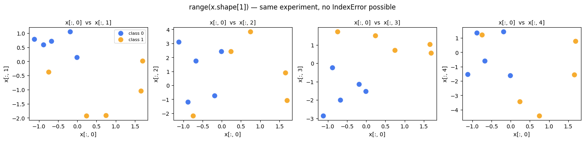
Output from this notebook.
Which generator do I reach for?
I want to practise…
Use
Because
linear regression, MSE, R², gradient descent
make_regression
the true slope is available with coef=True, so you can grade the model
logistic regression, trees, forests
make_classification
real labels, plus decoy columns and label noise
feature selection, PCA, multicollinearity
make_classification
n_redundant and the useless columns are the whole exercise
imbalanced-data metrics (precision, recall, ROC)
make_classification
weights=[0.99, 0.01] builds the problem in one line
KMeans, DBSCAN, the elbow method
make_blobs
round, separated groups with a known correct count
linear models provably fail, so the improvement is visible
Common mistakes
Mistake
What goes wrong
Leaving out random_state
Every run is a different dataset. You cannot tell whether your change helped or the data moved. Your first make_classification call has this.
Assuming column 0 is meaningful
shuffle=True scatters the informative columns. Verified above: your x[:, 0] was the useless one.
Forgetting the defaults
make_regression defaults to 100 columns, make_classification to 20. Always set n_features.
x[:, 5] on a 5-column array
Indexes stop at 4. Use range(x.shape[1]).
Trusting a synthetic score
These datasets are clean, balanced and well behaved. A model scoring 0.99 here proves the code runs, not that the model is good.
Where this shows up in real work
Unit tests for an ML pipeline.make_classification(random_state=0) in a
test gives a deterministic dataset that fits in memory. The test asserts the
pipeline runs, the shapes come out right, and the score does not fall below a
floor. No dataset file in the repository.
Reproducing a bug. "The model fails on imbalanced data" becomes a
four-line reproduction with weights=[0.99, 0.01], which you can attach to a
ticket.
Load and latency testing a model service. You need 100,000 rows of the
right shape to hit an endpoint. You do not need real customer records — and
using them would need a privacy review you can skip entirely.
Teaching and interviews. Every decision-boundary picture you have seen
was drawn on moons or circles.
Interview view
Why use synthetic data at all? Because you know the ground truth. It is
the only way to check whether a model recovered the pattern, rather than
just scoring well.
make_blobs vs make_classification? Blobs are plain isotropic
Gaussians and y is a cluster id — built for unsupervised work.
make_classification adds redundant, repeated and useless columns, label
noise (flip_y) and class imbalance (weights) — built for supervised work.
Why do make_circles and make_moons exist? To create data no linear
boundary can separate, so kernel methods and non-linear models have
something to prove themselves on.
What does n_redundant simulate? Multicollinearity — derived columns
that carry no new information but destabilise linear models and inflate
feature-importance scores.
What does noise mean? In make_regression, the spread added to the
answer y. In make_circles and make_moons, the spread added to the
point coordinates. Same word, different target.
What is not covered here
No model has been fitted in this notebook. The natural next steps are to take
make_regression data into LinearRegression and compare model.coef_ with
the coef=True answer key, and to take make_moons into both
LogisticRegression and KNeighborsClassifier to see the straight-line
ceiling from the bar chart above turn into two real scores.
Key takeaway
If you remember only one thing:make_* gives you data whose answer you
already know — so always set random_state, always set n_features, and never
assume a column's position tells you what that column is for.
✍️ Handwritten notes
The pages written by hand while working through this topic — the version that came before the tidy write-up. Click any page to enlarge.